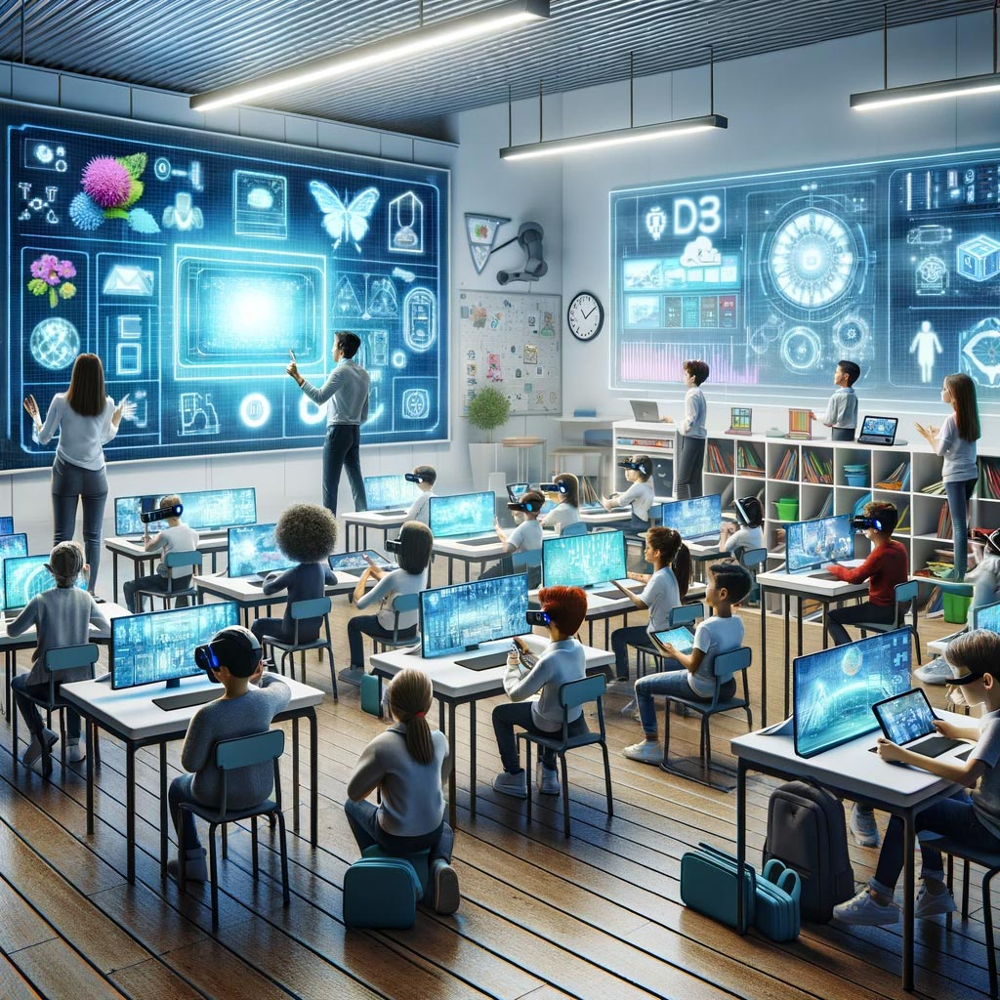

ICT in education means using technology such as computers, the internet, projectors, and digital tools to improve teaching and learning in schools.
ICT helps students access information quickly, improve digital skills, communicate effectively, and learn through interactive and creative methods.
ICT gives students from different backgrounds equal opportunities to access educational resources, online lessons, and learning materials.
Many schools in Myanmar face challenges such as limited internet access, lack of digital devices, and insufficient ICT training for teachers and students.
ICT helps people communicate, solve problems, share information, and use technology efficiently, which supports the development of smarter and more sustainable cities.
ICT transforms learning from passive to active. Students can explore, research, and interact with content instead of only listening in class.
Yes, ICT allows students to learn at their own pace, practice skills, and express ideas through digital tools, which builds confidence.
ICT enables students to study anytime and anywhere. They can search for information, watch lessons, and learn without always depending on teachers.
ICT encourages students to create new ideas, design projects, and develop solutions using technology.
ICT can reduce paper use, support digital systems, and help manage resources more efficiently in a smart city.
©2026 Smartrix. All rights reserved.